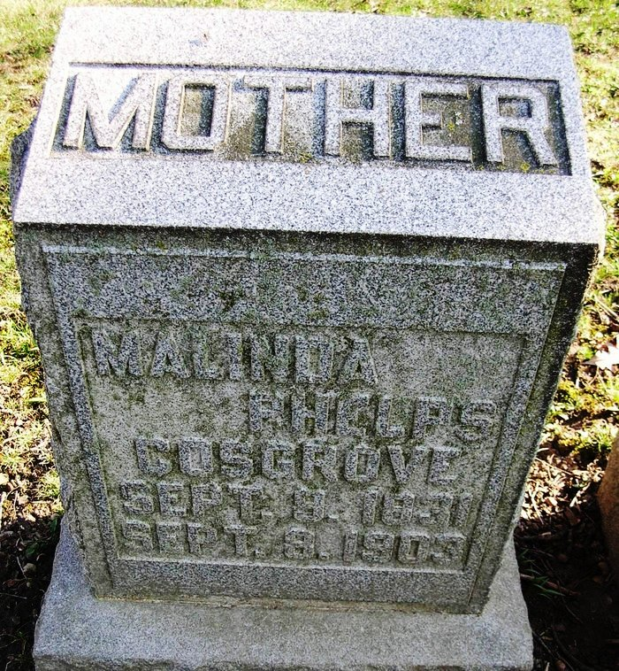

| 
Malinda PHELPS (1831-1903) |
Malinda PHELPS 1 2 3 4
DEATH: According to her headstone and her obituary, Malinda died on 8 Sep 1903 (not 9 Sep 1903)
-- Indiana Marriage Collection (1800-1941) Malinda married Dr. Franklin Kibbie COSGROVE, Sr. on Mar 23, 1851 in Dekalb County, Indiana. (Dr. Franklin Kibbie COSGROVE, Sr. was born on Mar 18, 1827 in New Carlisle, Warren County, Ohio and died on Apr 12, 1912 in Harlan, Allen County, Indiana.) |
 Another name for Malinda was Malinda PHELPS.
Another name for Malinda was Malinda PHELPS.